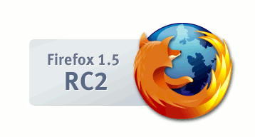

Mozilla Firefox プロジェクト
【訳注: このページは、英語版のページを参考のために和訳したものです。】
Firefox 1.5 Release Candidate 2
Firefox 1.5 Release Candidate 2 が公開されました。これは、今年末にリリースが予定されている Firefox 1.5 の 2 番目のリリース候補であり、互換性調査の実施とフィードバック収集のため、開発者およびテスター向けに提供されるものです。
注意: これは Firefox 1.5 の最終版ではなく、テスト目的に限って 利用できる開発途上版で、ユーザコミュニティ等を通じたエンドユーザサポートはありません。エンドユーザの方は安定版の Firefox 1.0.7 をご利用ください。
詳しくは Firefox 1.5 RC 2 リリースノート をご覧ください。
RC 2 日本語版
これまでのアルファ版とベータ版
- Deer Park Beta 2 (2005/10/06)
- Deer Park Beta 1 (2005/09/08)
- Deer Park Alpha 2 (2005/07/12)
- Deer Park Alpha 1 (2005/05/31)
現在のリリース
- Firefox 2.0.0.14 (2005/09/20)
次期メジャーリリース
プロジェクトのリンク
2.0 開発ロードマップ - Firefox 2.0 に向けた計画と優先順位を解説しています。
Firefox 1.0 開発憲章 - このプロジェクトが始められた理由と、プロジェクトの目標を概説しています。
開発者向けリンク
Firefox 2.0.0.14 ソース tarball - Firefox 固有のソースは、レポジトリの mozilla/browser と mozilla/toolkit、mozilla/chrome 以下にあります。
Firefox のビルド方法 - 解説と設定について
Firefox のローカライズ - その手順
Firefox 拡張機能 - 新しい拡張機能システムに関する開発ノートです。
シェルの統合 - 新しいクロスプラットフォームなシェルの統合システムです。
Firefox レビュー要件 - mozilla/browser ディレクトリへのすべてのチェックインについて
ツールキットレビュー要件 - mozilla/toolkit、mozilla/chrome ディレクトリへのすべてのチェックインについて
品質保証
様々な機能の 品質保証テスト - 作業中です。
ユーザインターフェイス
ユーザインターフェイス に関するドキュメントです。
過去の資料
1.0 開発ロードマップ - Firefox 1.0 に向けたマイルストーンと計画を解説しています。
協力者募集中
私たちは「縁の下の力持ち」になってコードの作業を行ってくれる方を常に募集しています。Web ブラウザ技術に興味があるなら、一流のオープンソース・ブラウザプロジェクトに参加してみませんか? 特に、Mac OS X プログラミングのスキルを持った人と Windows 開発者を探しています。何かバグを見つけて修正することから始めてみましょう。その手順を理解することは「参加に必要な条件」の一部と考えていますので、ここでは特に解説していません ;-)